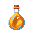
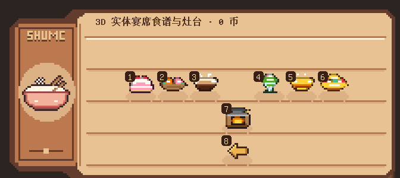
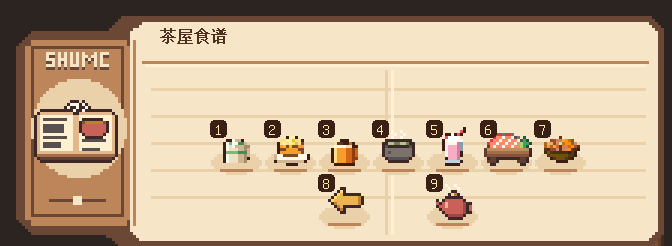
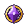
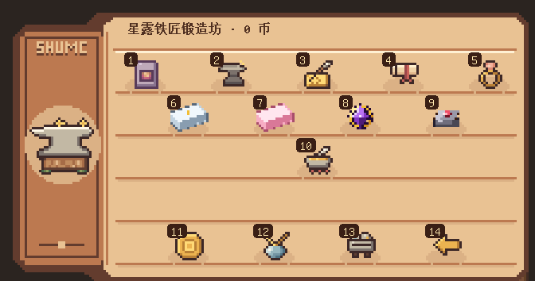
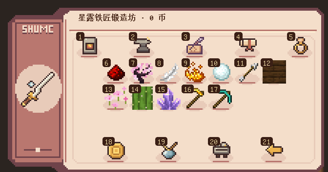
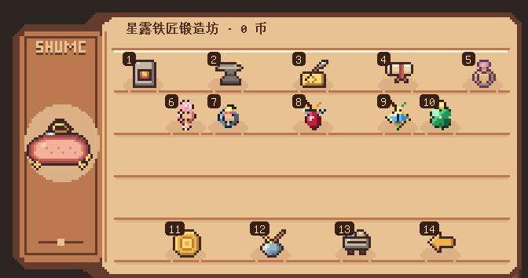
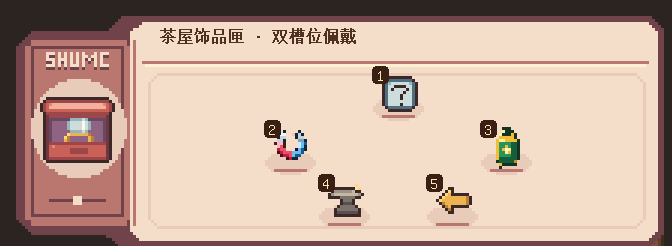
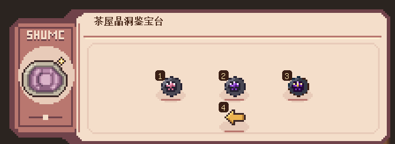

工坊 · 料理 · 锻造
把作物、鱼和牧场原料加工成更值钱的茶饮、甜点和大餐；在锻造坊给装备升星、铭刻词条、打造饰品
茶屋工坊 /brew
/brew（别名 /工坊、/酿造）。点下面的配方，原料会自动放进空槽位，等一会儿出成品。成品可以喝 / 吃掉拿增益，也能 /sell 出货（品质越高越值钱，👑 大师特调的出货价是普通品的 4 倍）。
- 槽位：默认 3 个；全服修好社区献祭的「☀ 夏季欢歌包」「⛏ 矿洞星辉包」各 +1，最多 5 个。
- 品质：★ 凡品到 👑 大师特调。标准模式品质随缘；精选提香模式多耗 1 个催化剂，必出 ★★ 以上。制作中还可以扇风控温冲一次升星。
- 加速：潜行右键木桶或营火打开工坊可以加速；搭子在附近、夏季包修复后也更快。
- 星级鱼入料：用高星鱼做鱼类配方有保底升星。
| 分类 | 配方 |
|---|---|
| 🍵 茶饮冲泡 | 樱花乌龙冷萃 ·  暖冬姜蜜茶 · 月光芋圆奶茶 · 碧海海盐芝士茶 · 出窍安神茶 月光芋圆奶茶 · 碧海海盐芝士茶 · 出窍安神茶 |
| 🍓 果酱酿造 |  星露甜浆果酱 · 金秋苹果气泡酿 · 鲜鱼秘制酱汁 · 星露甜浆果酱 · 金秋苹果气泡酿 · 鲜鱼秘制酱汁 ·  星露鱼子佳酿 星露鱼子佳酿 |
| 🥐 工坊烘焙 | 焦糖肉桂卷 · 芝芝抹茶大福 · 秋日南瓜焦糖派 · 樱花鲷鱼烧 |
| 🔮 隐藏秘方 |  落樱春风露 · 盛夏薄荷气泡饮 · 落樱春风露 · 盛夏薄荷气泡饮 ·  金秋锦鲤御羹 · 金秋锦鲤御羹 ·  暖冬雪松肉桂拿铁 暖冬雪松肉桂拿铁要用当季香料研发，全服第一个做出来的人永久冠名 |
部分茶饮示例：
| 饮品 | 原料 | 效果 | 时间 | 出货价 |
|---|---|---|---|---|
| 🍵 樱花乌龙冷萃 | 樱花树叶 ×2 + 甜浆果 ×2 + 糖 | 速度 I + 幸运 I | 1 分 | 48 币（大师 192） |
| 🍯 暖冬姜蜜茶 | 蜂蜜瓶 + 甜菜根 ×2 + 糖 | 生命恢复 I + 抗火 | 1 分 15 秒 | 58 币（大师 232） |
| 🌙 月光芋圆奶茶 | 牛奶桶 + 可可豆 ×2 + 发光浆果 | 夜视 + 幸运 I + 速度 I | 1 分 30 秒 | 78 币（大师 312） |
| 🌊 碧海海盐芝士茶 | 任意鱼 + 干海带 ×2 + 牛奶桶 | 海豚的恩惠 + 水下呼吸 + 急迫 I | 1 分 35 秒 | 92 币（大师 368） |
👻 出窍安神茶：灵魂出窍看自家建筑
原料：发光浆果 ×2 + 樱花树叶 ×2 + 蜂蜜瓶 ×1，制作 1 分 30 秒。喝下后原地留下一个带你皮肤的「肉身」，你切成旁观视角飞出去欣赏自己的建筑，时长按品质 60 / 81 / 105 / 132 秒；连按两次 Shift 提前回魂。
- 只能在肉身 48 格内飘，钻不进实心方块，进不了没给你权限的别人领地；
- 不能开箱子、用指令或传送；刚受伤 10 秒内、骑乘、滑翔或掉落中喝不下去（不会消耗饮品）。

随身小吃 /kitchen
/kitchen（别名 /食谱）是 6 道随身小吃：材料齐了点一下当场做，也可以在工作台无序合成。
| 小吃 | 配方 | 效果 |
|---|---|---|
 樱花抹茶拿铁 樱花抹茶拿铁 | 糖 + 牛奶桶 + 樱花树叶 | 速度 I（2 分钟）+ 樱花粒子 |
| 焦糖蜂蜜松饼 | 小麦 + 蜂蜜瓶 + 鸡蛋 | 饱和 + 生命恢复 I（90 秒） |
| 矿工浓缩冰美式 | 可可豆 + 糖 + 冰块 | 急迫 II + 夜视（3 分钟） |
| 草莓爱心奶昔 | 甜浆果 + 牛奶桶 + 糖 | 跳跃提升 II + 爱心粒子（2 分钟） |
| 黄金鱼王刺身拼盘 | 生鲑鱼 + 生鳕鱼 + 干海带 | 水下呼吸 + 幸运 II（3 分钟） |
 暖冬营火浓汤 暖冬营火浓汤 | 烤马铃薯 + 熟牛肉 + 碗 | 抗火 + 抗性提升 I（3 分钟） |
宴席灶台 /feast
/feast（别名 /宴席、/大餐）。先花 1200 币买一台 3D 茶屋烹饪灶台摆在家里（潜行右键收回），然后右键灶台选菜开火，还能右键灶台颠勺加速。做好的大餐摆上桌，大家分着吃。
大餐品质看食材平均星级：平均 2.5★ 出「秘制」，3.5★ 出「御膳」。
| 大餐 | 主要食材 | 效果 | 炭火费 |
|---|---|---|---|
| 樱露草莓奶油蛋糕 | 樱桃草莓 ×2、鲜奶、鸡蛋 ×2、糖 ×2 | 生命恢复 II + 速度 I（5 分钟）· 5 份 | 120 币 |
| 鱼王豪华刺身船 | 任意星级鱼 ×3、抹茶嫩芽、海带 ×2 | 水下呼吸 + 幸运 II + 急迫 I（6 分钟）· 5 份 | 180 币 |
 黑金松露奶油浓汤 黑金松露奶油浓汤 | 黑松露、鲜奶 ×2、奶油防风草 ×2 | 抗性 I + 抗火 + 饱和（6 分钟）· 5 份 | 220 币 |
| 宇治抹茶樱花芭菲 | 抹茶嫩芽 ×2、樱桃草莓、鲜奶、百花蜜 | 速度 II + 跳跃 II + 樱花光环（5 分钟）· 5 份 | 160 币 |
| 星露芝士铜锅 | 陈年奶酪 ×2、蛋黄酱、板栗金南瓜 ×2 | 力量 I + 生命吸收 II + 饱和（6 分钟）· 5 份 | 220 币 |
 鼠鼠茶屋满汉全席 鼠鼠茶屋满汉全席 | 松露精油、陈年奶酪、星级鱼 ×2、樱桃草莓 ×2 | 速度 / 急迫 / 幸运 / 再生 / 抗性（8 分钟）· 8 份 + 全服播报 | 680 币 |




星露锻造坊 /forge
/forge（别名 /锻造、/tiejiang）有五个分页。工费从茶屋币里扣，搭子在身边打 85 折。矿石可以在铁匠「小锤」那里买（/npcshop blacksmith）。
🔥 矿石精炼：四种锻造合金
| 合金 | 配方 | 工费 | 用途 |
|---|---|---|---|
 星露精铁锭 星露精铁锭 | 铁锭 ×4 + 煤炭 ×2 | 10 币 | 基础升星材料 |
 樱花秘银锭 樱花秘银锭 | 精铁锭 ×2 + 金锭 ×2 + 樱花树叶 ×2 | 25 币 | ★3~★5 升星核心 |
 星辉紫晶核 | 紫水晶碎片 ×4 + 钻石 ×1 | 40 币 | ★5 突破与铭刻 |
 红莲淬火石 红莲淬火石 | 红石 ×4 + 下界石英 ×2 + 金锭 ×1 | 30 币 | 高阶淬火与战斗铭刻 |
♻ 旧装备熔解：把主手的铁 / 金 / 钻 / 下界合金装备熔回合金，并返还 15–45 币（每星再 +10）。
⭐ 淬火升星
主手拿着剑 / 斧 / 镐 / 铲 / 锄 / 弓 / 弩 / 盾 / 护甲可以从 ★0 升到 ★5，饰品可以升到 ★3，必定成功。
✨ 匠心铭刻：12 种词条
给主手装备刻 1 条特效词条，成功率 100%，再刻会覆盖旧的。
| 适用 | 词条 |
|---|---|
| 武器 | 🩸 吸血（20% 吸 2 生命）· 🌸 樱花斩击（25% 樱花震荡 +3 伤）· ⚡ 疾风连斩（20% 速度 II 并 +2 暴击伤）· 🔥 烈焰破甲（点燃，对精英 / 试炼 Boss +2.5 伤） |
| 弓 / 弩 | ❄ 霜星箭雨（满弦 25% 生成冰霜减速阵）· 🎯 追风回响（命中得速度 I，20% 返还箭矢） |
| 护甲 | 🛡 星辉护佑（受击 20% 抗性 I）· 🍃 轻盈步履（15% 闪避减伤 50%）· 🌵 荆棘星刺（反弹 25% 伤害，上限 5） |
| 工具 | 🧲 磁吸采矿（掉落物直接进背包）· 🌾 丰饶沃土（锄头：20% 3×3 连收并补种）· 💎 幸运矿脉（镐：18% 多掉 1 份矿物） |
📜 祈福卷轴（一次性，右键使用）




饰品与饰品匣 /accessory
/accessory（别名 /饰品）打开饰品匣：1 个戒指槽 + 1 个护符槽，戴上后不占主手、副手和盔甲栏也一直生效。点背包里的饰品自动戴上，点已佩戴的取下。
在锻造坊「饰品工坊」打造（合金 + 专精特产）
另外，杂货铺的星露磁铁指环、芝芝幸运御守，冒险公会的吸血蝙蝠戒指、磐石护佑符石也都能戴进饰品匣。




神秘晶洞 /geode
挖自然矿石时有 12% 概率掉出晶洞（探矿匠、「矿脉大吉」运势各 +10%）。拿到 /geode（别名 /晶洞）鉴宝台敲开：

